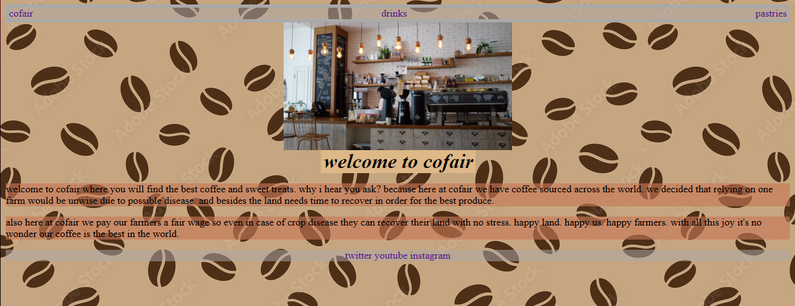

projects
Although i have only just started i do have a couple of projects under my belt currently and this will swiftly keep expanding.
the first project i worked on was a solo project assigned on my coding course.
coffee shop website

this was a relatively simple project however there was a few errors.
i did not manage to figure out responsiveness at this point and in order to try to sort this issue out
i ended up breaking the site completely on mobile devices.
however i did do some thing that was good.
for example i figured out how to link a website and i made a little easter egg
when anybody hits the twitter or other social media links at the footer page
it links to starbucks social media as this coffee shop was not real and had no social media.
as well as that i set the background to a image that was dmca free as it was available for comercial use.
made with css and html as per our restrictions this was my first taste of coding.
here is the githb link to check it out.
cofair coffee shop
team based text-based game
for this project we worked as a team. we only had 3 days to make this so it was very quick.
although there is bugs such as not everything fully loops it was still a fun experience.
we have some level of looping going on as well as one team member made some askii art.
as well as that we had multiple endings and even made use of lists.
a simple project with a lot of depth for such a short time and with python only restriction.
it showed great teamwork to work so efficiently together. check it out on my github below.
house of terror
to-do app

made with css, javascript and html i took on this personal challenge to improve my skills even more.
although with this there is only 1 issue tha tbeing with text typed remaining on enter
my skills improved drastically with this short project and im very proud of the results.
using javascripts built in storage system this app saves peoples todo's on reload.
as well as that users can cross out or delete any to-do's that are done or have a error in the typing.
i learned responsiveness, something ive carried on to this portfolio site.
although simple as a project these increase my knowledge in a efficient and practical way.
if interested check it out below.
serene's to-do app